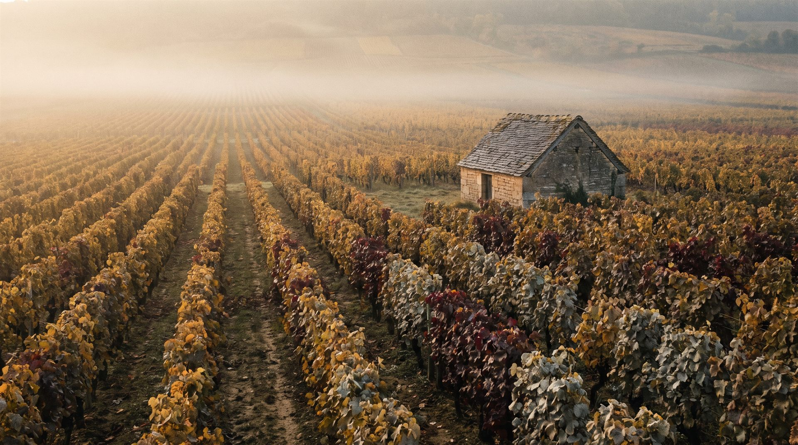
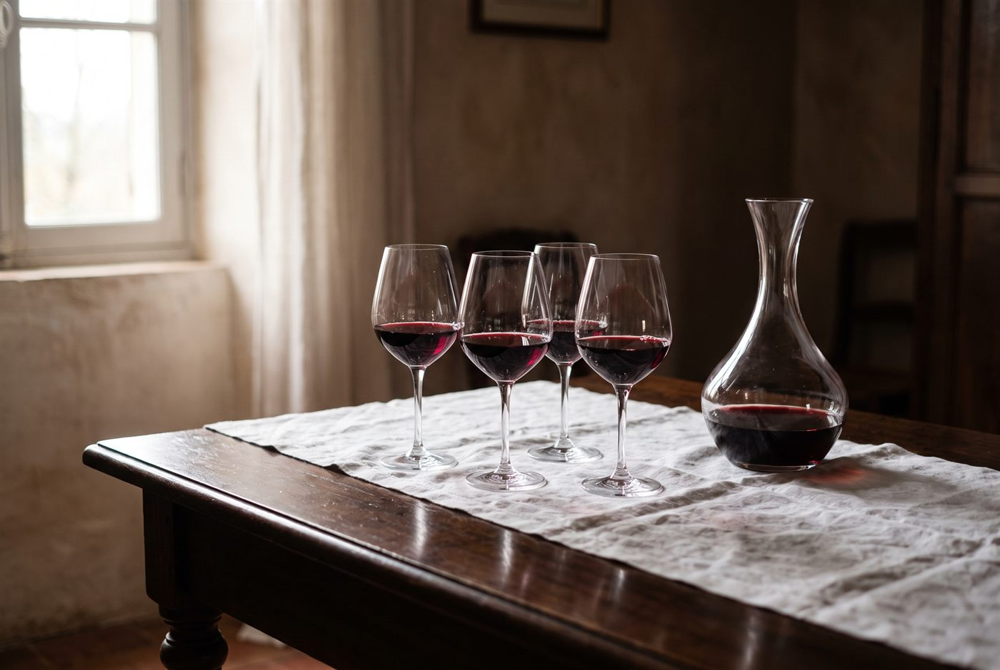

1
Choisir
Parcourez les domaines, ouvrez une fiche et notez les cuvées qui vous parlent. Sur demande, nous envoyons la liste des disponibilités et des prix du moment.
Bourgogne · Champagne · Rhône · Provence
Vingt-cinq domaines choisis un par un, du nord au sud.
Nous avons fondé Les Bourguignols en 2016 pour une raison simple : les vins que nous aimions le plus n'arrivaient pas au Québec. Nous sommes allés les chercher, domaine par domaine, dans les villages où ils naissent.
Nous sommes nos propres premiers clients. Chaque cuvée de ce catalogue a été goûtée à la table du vigneron avant de traverser l'Atlantique.
Parcourir les domaines
Cliquez une région pour n'afficher que ses domaines.
Chaque fiche présente le domaine, la personne qui le conduit et les cuvées que nous importons. Ouvrez-la pour voir les vins.

« Nous sommes nos propres plus gros clients. »Les fondateurs, 2016
L'importation privée permet de recevoir des vins qui ne sont pas sur les tablettes de la SAQ. C'est simple et parfaitement encadré : la SAQ reste l'intermédiaire, nous faisons le reste.
Parcourez les domaines, ouvrez une fiche et notez les cuvées qui vous parlent. Sur demande, nous envoyons la liste des disponibilités et des prix du moment.
Écrivez-nous. La commande se fait à la caisse, et nous vous précisons les formats possibles pour chaque cuvée. Aucun engagement au-delà de votre commande.
Votre commande arrive dans la succursale SAQ de votre choix, où vous la réglez au moment de la cueillette. Quelques jours si le vin est déjà en entrepôt, quelques semaines s'il doit traverser l'Atlantique.
Nous bâtissons des cartes avec plusieurs tables de Montréal et d'ailleurs au Québec. Demandez la liste professionnelle et les allocations à venir.
Une caisse suffit. Nous vous prévenons des arrivages et des cuvées rares dont les quantités sont comptées.
L'agence
Vincent, Michel et Natacha ont fondé Les Bourguignols en juillet 2016, après quelques années à en rêver. L'idée : représenter des domaines dont ils buvaient déjà les vins, et qu'aucune agence ne faisait venir au Québec.
Dix ans plus tard, le catalogue compte vingt-cinq domaines, presque tous familiaux, presque tous en Bourgogne, avec quelques échappées en Champagne, dans le Rhône et en Provence. Chaque maison entre au catalogue pour une seule raison : nous voulions ses vins dans nos verres.
Des vins de vignerons, choisis à la table du vigneron, pour des gens qui aiment le vin autant que nous.
Contact
Pour recevoir la liste des disponibilités, passer une commande ou simplement parler de Bourgogne.